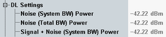

This branch displays noise power values, calculated from the downlink power, the cell bandwidth and the fading module AWGN settings.
For carrier aggregation scenarios, this information is available per component carrier.
The reference point for the power values is the RF output connector.

Displays the noise power on the downlink channel, i.e. within the cell bandwidth.
Remote command:Displays the total noise power, within and outside of the cell bandwidth.
The total noise power is irrelevant for 3GPP test cases. They specify the SNR or the noise power within the cell bandwidth. The total noise power is only displayed for compatibility reasons with Rohde & Schwarz signal generators.
Remote command:Displays the total power (signal + noise) on the downlink channel, i.e. within the cell bandwidth.
Remote command: